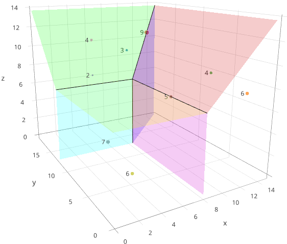
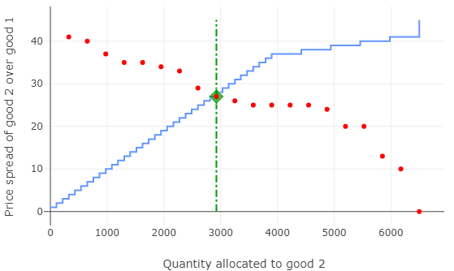
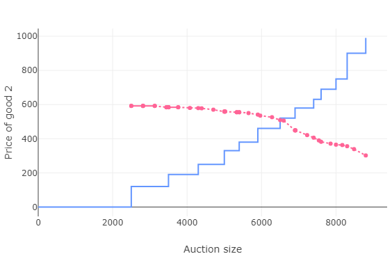
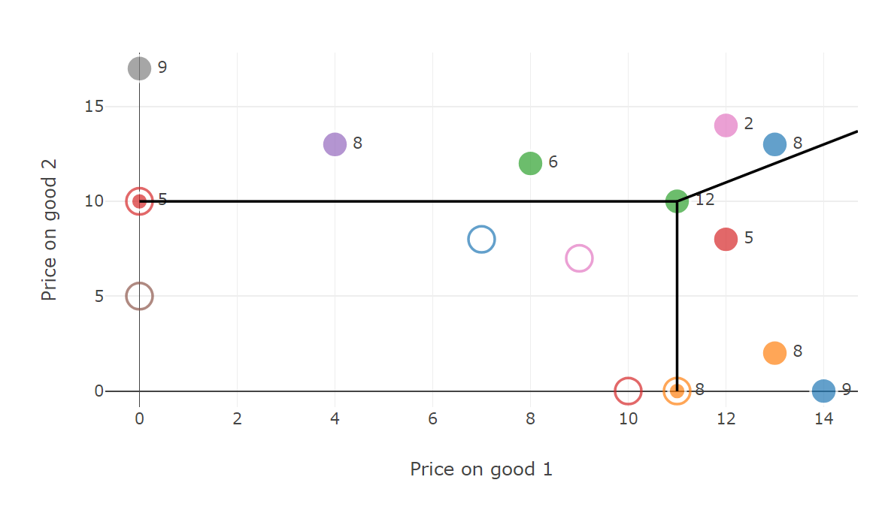

Product-Mix Auctions are easy-to-use, single-round, sealed-bid, procedures to sell, or procure, Multiple Units of Multiple Related Goods.
They allow both the bidders and the auctioneer to express rich preferences about how the allocations they receive depend on the auction prices.
Our Standard Version is a generalisation of the Bank of England's Indexed Long-Term Repo (ILTR) auction (described here). The Bank uses this auction monthly to allocate loans against different qualities of collateral.
Bidders simultaneously make sets of bids. Each bidder can make as many bids as desired.
Each of a bidder's bids specifies:
a good,
a number of units to be bought of that good, and
a maximum per-unit price for that good.
A bidder can make bids on as many goods as desired.
The auctioneer can permit "OR" bids. An "OR" bid specifies:
a list of goods,
a total number of units to be bought of any of the goods in the list, and
a maximum per-unit price for each good in the list.
--the auction accepts the offer on at most one of the goods listed by an "OR" bid (whichever is best for the bidder, given the prices set by the auction).
The auctioneer can permit bidders to express even more sophisticated preferences.
The auctioneer can express rich preferences about how the numbers of units of the different varieties to be sold is determined.
Our Version for Budget-Constrained Bidders may be useful when, e.g., a country's creditors exchange their claims (nominal amounts of debt) for a choice among new debt instruments, or an acquired firm’s shareholders exchange their holdings (numbers of shares) for a choice of cash or new shares. This auction was originally developed for the Government of Iceland.
Bidders simultaneously make sets of bids. Each bidder can make as many bids as desired.
Each of a bidder's bids specifies:
a good,
a budget (e.g., nominal amount of debt, or number of shares) to be exchanged for that good, and
a maximum per-unit price for that good.
A bidder can make bids on as many goods as desired.
The auctioneer can permit "OR" bids. An "OR" bid specifies
a list of goods,
a total budget (e.g., nominal amount of debt, or number of shares) to be exchanged for any of the goods in the list, and
a maximum per-unit price for each good in the list.
--the auction then accepts the offer on at most one of the goods listed by an "OR" bids (whichever is best for the bidder, given the prices set by the auction).
The auctioneer can express rich preferences about how the numbers of units of the different varieties to be sold is determined.


Getting started:
See this presentation for an overview of Product-Mix Auctions.
This paper explains and discusses Product-Mix Auctions in more detail; it focuses on the Standard Version (brief descriptions of other versions are in Appendices).
Read this for a demonstration of the software, with examples of its use, and a companion slide set with annotated screenshots.
Try out our "Positive and negative dot-bids" Version; this extends the standard version to permit all participants (buyers and seller) to express any strong substitute preferences for indivisible goods (also available in command line version).


The software is all open-source (command-line program pma, and a web
application pma-server). We are developing the software further, and welcome contributions. Please let us know if you add, or making changes, to the source code.
The web app we are hosting provides a single-user interface allowing an auction specification to be constructed in a web browser form. With the code provided, users can also host it locally.